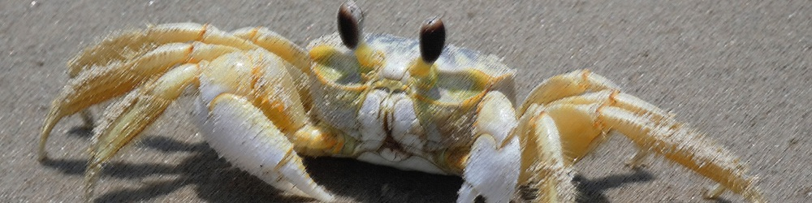
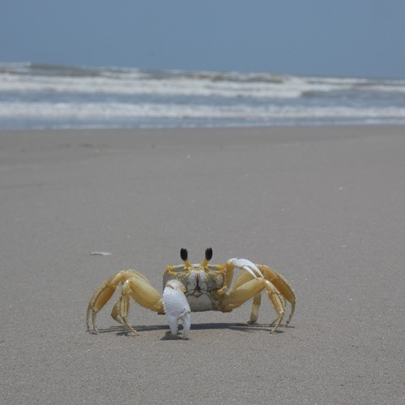
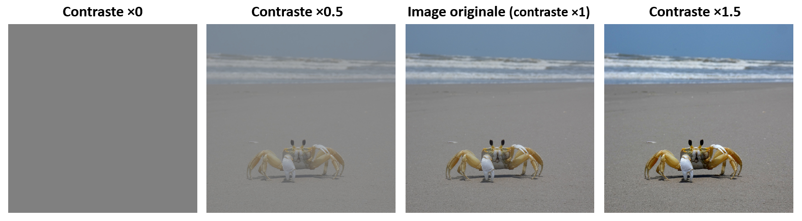
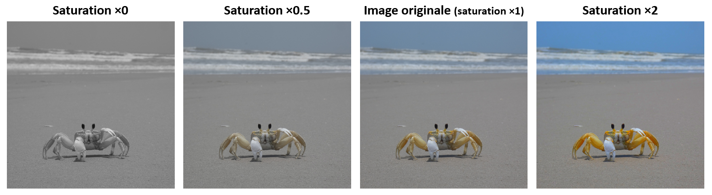

Chapitre I : Introduction à la vision par ordinateur
Ce chapitre introduit des notions essentielles pour ce cours telles que la capture, la numérisation, l'affichage et la retouche d'images. Il amènera ainsi petit à petit le concept de "vision", et la discipline de la "vision par ordinateur".

"J’ai la satisfaction de pouvoir t’annoncer enfin, qu’à l’aide du perfectionnement de mes procédés je suis parvenu à obtenir un point de vue tel que je pouvais le désirer, et que je n’osais guère pourtant m’en flatter, parce que jusqu’ici, je n’avais eu que des résultats forts incomplets. Ce point de vue a été pris de ta chambre du côté du Gras; et je me suis servi à cet effet de ma plus grande chambre obscure et de ma plus grande pierre. L’image des objets s’y trouve représentée avec une netteté, une fidélité étonnante, jusque dans ses moindres détails, et avec leurs nuances les plus délicates."
Nicéphore Niépce, lettre du 16 septembre 1824, à destination de son frère Claude.
Image exemple
Lors de ce chapitre, nous utiliserons une image exemple, que vous pourrez trouver ici.
{kind=link}
Il s'agit d'une photographie d'un Ocypode quadrata, aussi connu sous le nom de "Atlantic Ghost Crab", prise en 2023 à Padre Island National Seashore (Texas, USA).

N'hésitez pas à aller regarder les détails de la prise de vue dans les métadonnées de l'image !
La vision
Intéraction lumière-surface
L'oeil, organe de la vision
Le cerveau, grand illusioniste
C'est quoi la vision ?
La caméra : une machine à faire du 2D
Sténopé et chambre noire
L'objectif photographique
La photographie argentique
La photographie numérique
Réglages d'une caméra
Numérisation d'une image : passer du monde continu au monde discret
Discrétisation de l'image
Encodage des couleurs
Formats et compression
L'écran : reproduire le réel
Manipuler des images avec Python
Pillow
Scikit-image
Open-CV
Retouche d'images : améliorer le réel
Luminosité

Contraste

Saturation
